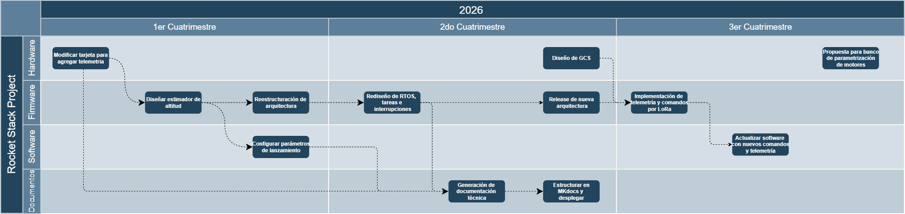

Descripción del proyecto
La Controladora de Vuelo V2 es el primer desarrollo de hardware y firmware dentro de TheRocketProject. Su propósito es servir como una plataforma modular para la adquisición de datos, control de vuelo, telemetría, recuperación y validación experimental en proyectos de cohetería.
Esta tarjeta fue diseñada como una base de desarrollo abierta, documentada y extensible. A partir de ella, estudiantes, desarrolladores e investigadores pueden implementar funciones específicas para sus propios vehículos, integrar nuevos sensores, modificar el firmware, realizar pruebas en tierra y analizar datos de vuelo.

Objetivo de la tarjeta
El objetivo principal de la Controladora de Vuelo V2 es proporcionar una plataforma electrónica confiable para centralizar las funciones críticas de un cohete experimental, incluyendo:
- Lectura de sensores inerciales y ambientales.
- Registro de datos de vuelo.
- Comunicación con periféricos externos.
- Control de actuadores.
- Activación de sistemas de recuperación.
- Integración con herramientas de análisis y prueba.
- Desarrollo y validación de firmware embebido.
La tarjeta está pensada como una base de trabajo para proyectos educativos, universitarios y experimentales, donde sea necesario contar con una arquitectura flexible que pueda evolucionar conforme aumente la complejidad del vehículo.
Capacidades principales
La Controladora de Vuelo V2 integra distintas interfaces y subsistemas orientados a aplicaciones de cohetería experimental:
| Área | Descripción |
|---|---|
| Procesamiento | Microcontrolador STM32F722RET6 para adquisición, control y registro de datos. |
| Sensores | Integración de sensores inerciales y ambientales para estimación del estado del vehículo. |
| Almacenamiento | Registro de información de vuelo en memoria flash externa de 8 MB. |
| Comunicación | Interfaces de expansión como UART, USB y CAN para expandir funcionalidad. |
| Telemetría | Módulo LoRa para envio de telemetría y recepción de comandos. Compatible con protocolo SBUS. |
| Actuadores | Salidas para servos, actuadores o mecanismos auxiliares por medio de PWM. |
| Fases | Tareas dedicadas para sistemas de recuperación, separación o eventos de misión. |
| Alimentación | Capacidad de alimentación en un rango de voltaje desde 5 V hasta 28 V. |
| Depuración | Interfaz de programación para carga de firmware, pruebas y diagnóstico por medio de ST-Link. |
Uso previsto
La Controladora de Vuelo V2 puede utilizarse como plataforma base para:
- Cohetes experimentales de baja y media potencia.
- Bancos de prueba de aviónica.
- Pruebas de sensores y algoritmos de estimación.
- Sistemas de registro de datos de vuelo.
- Sistemas de recuperación electrónica.
- Desarrollo de firmware embebido para aplicaciones aeroespaciales.
- Validación de procedimientos de integración, prueba y análisis post-vuelo.
- Identificación de sistemas e implementación de sistemas de control.
- Ignisor de cargas pirotécnicas a distancia.
Aunque la tarjeta está orientada inicialmente a cohetería experimental, su arquitectura también puede adaptarse a otros sistemas aeroespaciales donde se requiera adquisición de datos, control embebido, telemetría o registro de eventos.
Firmware
El firmware de la Controladora de Vuelo V2 se encarga de inicializar los periféricos, adquirir datos de sensores, administrar los estados del sistema, registrar información de vuelo y ejecutar las funciones asociadas a la misión.
La descripción técnica del firmware incluye la arquitectura del proyecto, organización de módulos, drivers, tareas principales, flujo de ejecución, manejo de errores y procedimientos de compilación y carga.
Hardware
La documentación de hardware contiene la información necesaria para comprender la arquitectura física de la tarjeta, sus conectores, interfaces, alimentación, sensores, salidas y consideraciones de integración.
En esta sección también se incluyen diagramas eléctricos, esquemáticos, distribución de pines y archivos relacionados con la fabricación o revisión del diseño.
Consideraciones de seguridad
La Controladora de Vuelo V2 puede interactuar con sistemas críticos del vehículo, incluyendo recuperación, separación, actuadores y eventos automáticos de misión. Por esta razón, cualquier integración debe realizarse de forma progresiva, documentada y bajo condiciones controladas.
Antes de utilizar la tarjeta en pruebas reales, se recomienda validar cada subsistema por separado, revisar la alimentación eléctrica, verificar la continuidad de conexiones, comprobar el comportamiento del firmware y ejecutar pruebas de banco antes de realizar una integración completa.
La documentación de TheRocketProject busca promover el desarrollo responsable de sistemas de cohetería experimental. El uso de la tarjeta debe realizarse conforme a las regulaciones locales, buenas prácticas de seguridad y procedimientos definidos por cada equipo o institución.
Estado actual
La Controladora de Vuelo V2 se encuentra en una etapa inicial de desarrollo y documentación. Actualmente, esta sección funciona como punto de entrada para conocer las capacidades generales de la tarjeta y acceder a la documentación técnica del firmware y hardware.
Conforme el proyecto evolucione, esta documentación se ampliará con guías de integración, ejemplos de uso, procedimientos de prueba, herramientas de análisis y resultados experimentales.
En la siguiente imagen se agrega un "Roadmap" del estado actual y los planes a futuro del proyecto:
